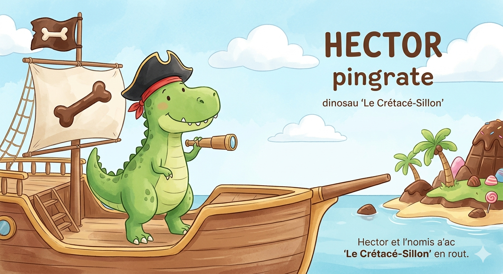

⚓
L'Univers d'Hector
Le T-Rex Pirate
Préparez-vous à l'abordage ! 🏴☠️🦖
Fabrique ton Tricorne
Deviens un pirate terrifiant comme Hector avec ce chapeau magique très facile à découper !
✂️ Patron du Chapeau
💡
Le Savais-tu ?
Savais-tu que les T-Rex n'auraient pas pu mettre de chapeaux de pirate tout seuls ?
Leurs bras étaient tellement petits qu'ils ne pouvaient même pas toucher leur propre nez !
Triste vie pour un pirate... 🏴☠️